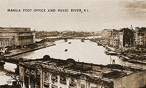

|
j
a v a s c r i p t |
Pg.2/3
February 7, 1945
At 1800 a new battle replaced the one I called San Juan Hill, which I'm renaming the Battle of the Eastern Outskirts. This takes in Quezon City, Diliman and San Juan because Japanese positions in San Juan are light and their batteries somewhat north of there. Artillery fire at 1830 from four batteries in radically different sectors was heavy. I'm told that I wouldn't be able to recognize Carriedo. Echague, Villalobos, Carriedo, the Escolta, Rizal Avenue up to Azcarraga and north of there including the Oroquieta Church are burned out. Concrete buildings are gutted and may have underground mines with time fuses. R. Hidalgo and Legarda are OK though.

Post Office (L) and Business District (R)
I went up the Barreto house to have a look with Connor's binoculars. Even the Post Office Building is gutted, and there's no stauncher concrete building than that in Manila. The Customs House and Michel Apartments seemed OK. Bad vision obscured other landmarks but I could see the Heacock Building, Avenue Theater, Filipinas, Insular Life and Chaco Building — the landmarks of the business and theater sections — all gutted. Juan Luna is gone. With a huge fire raging north of the Pasig, the whole of the northern shoreline could possibly cook. A small fire in the south (possibly Intramuros) didn't spread. Manila continues to be parched dry, waterless and rainless. Almost anything will burn now ... and fast. . . . Some people have enough time on their hands to become philosophical. So far I've been limiting myself to gathering and storing information; but at the Barreto Tower, as I watched a Sherman tank on Manga Avenue start a fire, a thought struck me and persisted for a solid hour. I reached no conclusion but I note it here for later reference: The Japanese are willing to go to extreme lengths to delay MacArthur for one or two weeks and extract a couple of thousand American casualties — a crime if you ask me because of the effect on innocent civilians. On the other hand, the Americans fight so cautiously that to spare themselves a couple of thousand casualties they are standing by while the city suffers casualties in the tens of thousands. At this moment I doubt the process of thought that brought this up. How could I know when I do not still know the extent of Japanese devilry in mining buildings, starting fires and purposely shelling civilian structures? I wonder though what the American correspondents are telling the world about the Battle of Manila. . . . |
|
|
|
|